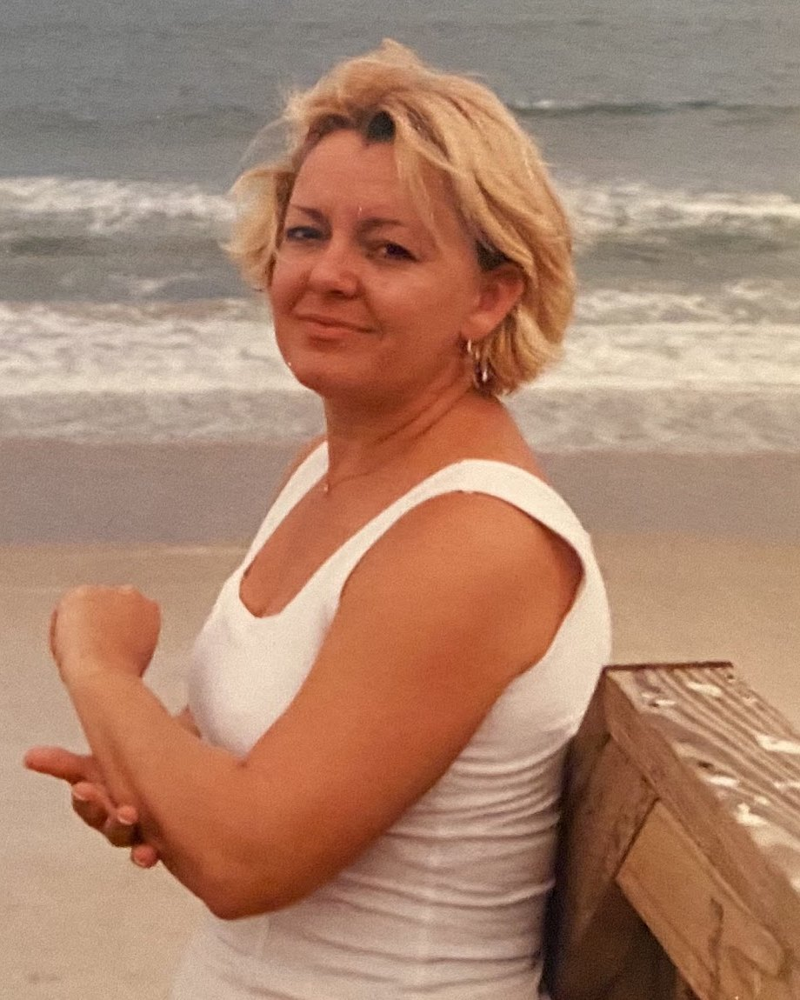
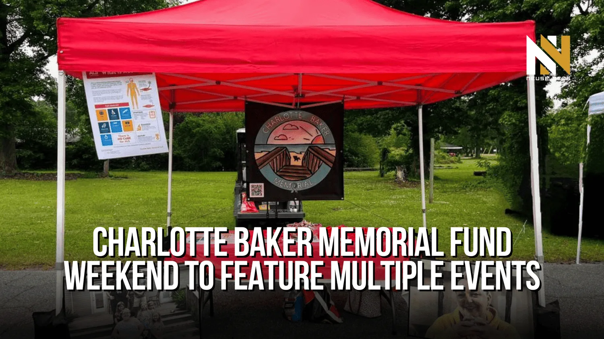
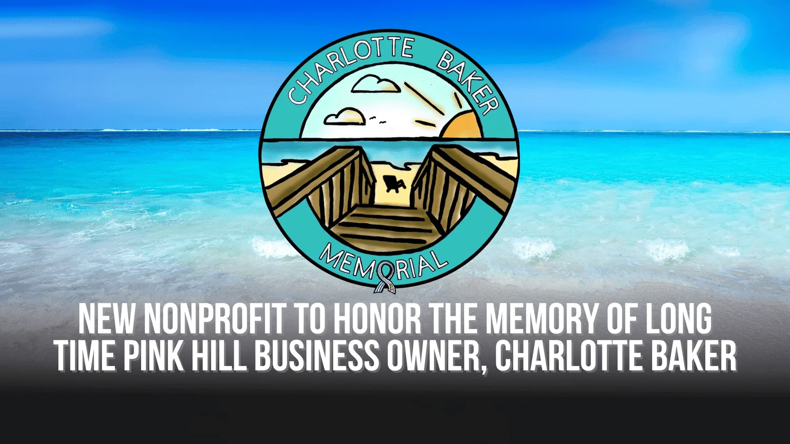

Equipment
As ALS progresses, needs change quickly. We help families get the mobility and medical equipment that keeps their loved one safe, comfortable and connected.
Pink Hill, North Carolina
The Charlotte Baker Memorial Fund helps ALS patients and their families across eastern North Carolina, powered by a community that keeps showing up.
Our mission
Charlotte was known for having a big heart and helping her community. In her memory, we help ALS patients and their families with funds raised by our community, for our community.
How your gift helps
ALS is a devastating disease with no known cure, and caring for someone with it is expensive. Your support goes straight to the families living it, right here at home.
As ALS progresses, needs change quickly. We help families get the mobility and medical equipment that keeps their loved one safe, comfortable and connected.
Changes that make a house work for someone living with ALS, so they can stay home, surrounded by the people who love them.
ALS brings costs most families never see coming. Direct help lightens the load so they can focus on what matters most: time together.
You don't have to figure this out alone. Reach out privately and our team will listen and see how we can help.

Her story
Charlotte Baker was a lifetime Duplin County resident and Pink Hill business owner. In 2018 she was diagnosed with amyotrophic lateral sclerosis (ALS, or Lou Gehrig's disease), and in 2021 she passed away after a valiant battle.
Through her journey, her husband Joe saw firsthand what ALS asks of a family. So family and friends came together to honor Charlotte the way she lived: by helping the people around her.
Read Charlotte's storyUnderstanding ALS
ALS is a progressive neurodegenerative disease that affects the nerve cells controlling voluntary muscles. Over time, people lose the ability to walk, speak, eat and eventually breathe on their own.
Every 90 minutes, someone in the U.S. is diagnosed with ALS.
The average life expectancy after an ALS diagnosis.
Known cures, so far. That's why care and support for families matter so much today.
Source: The ALS Association


Every fall in Pink Hill
Barbecue smoke, vendor booths, a walk in Charlotte's honor and a sea of memorial T-shirts. The Charlotte Baker Memorial Weekend is our biggest fundraiser of the year.
In the news


Be part of her legacy
Every gift, raffle ticket and plate of barbecue goes toward helping a local family face ALS with a little less weight on their shoulders.